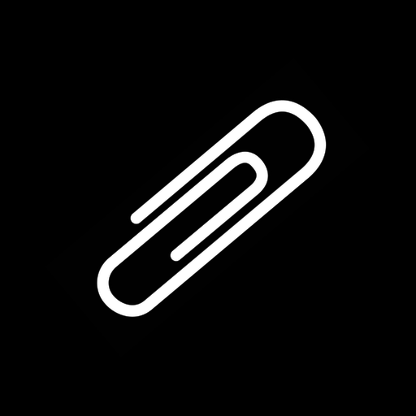
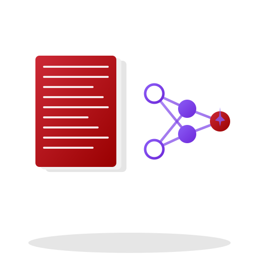

On-device AI for document privacy.
Document redaction with automatic PII detection, powered by our multilingual small language models that run entirely on your device. Built for lawyers, journalists, researchers, and compliance teams.
Designed and built in the Netherlands
Document redaction for Mac · On-device AI
Solander.
Redact PDF, Word and Excel with provenance receipts. Own small language model fine-tuned on English, French and Dutch for optimal performance.
Free for one document at a time. No account.
Machine learning · Engineering notes
Engineering blog
AI models have long outrun what most tasks actually require. The issue today is rarely about model power but rather about vague task definition or inadequate security. We design purpose‑built software around small language models, each specialised for a specific job and small enough to run on your device.
Our software
Offline, no account
-
Launching soon
Solander
macOS 14+ · from $49
Redact PDFs, scans, Word and Excel files, with personal details found by our own small language model. Then check that the redaction held.
- Editions
- PDF ($49) for PDFs and scans. Desk ($69) for Word and Excel, with names swapped for placeholders.
- Checks
- Reads its own output back for anything still legible
- Records
- A redaction log and a signed report with every export
- Network
- None. The app has no network entitlement.
-

AvailableShadowClip
macOS 14+ · iOS 17+
Redact screenshots before they go to an AI tool, a colleague or a support ticket. Review what it found, then save a clean copy. The original is never touched.
- Finds
- API keys and tokens, card numbers, IBANs, emails, faces, QR codes, names
- Network
- None. The app has no network entitlement.
- Price
- One purchase covers Mac and iPhone
-

Available · freeRAG Assistant for Zotero
macOS · Windows · Linux · GPL-3.0
Semantic search across your Zotero library. Describe what's on your mind and it finds related passages in your PDFs, surfacing connections you might miss in a literature review. A library clerk, not a summariser.
- Search
- Semantic and keyword search together, reranked passage by passage
- Models
- Local with Ollama or LM Studio, or a cloud provider you choose
- Downloads
- 9,000+ across 30+ releases
- Sources
- Every passage cited to its paper and page, filterable by year, tag, collection or author
Thanks for visiting my website!
My name is Alex. I am an engineer and applied researcher working on privacy, safety, and reliability in AI systems. Through my client and open-source work, I program systems that are often hybrid -- making the best of what probabilistic models offer, combined with deterministic constraints. My background in both ML and business lets me act as a bridge between the two, with end-to-end ownership of what I build.
Don't hesitate to drop me a message if you are interested in what I do.